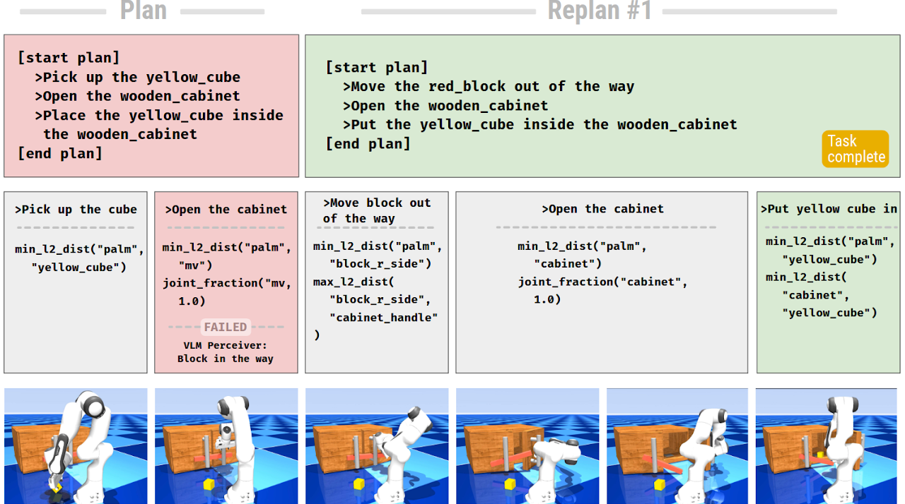
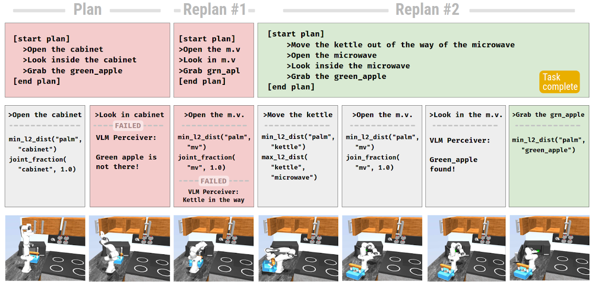
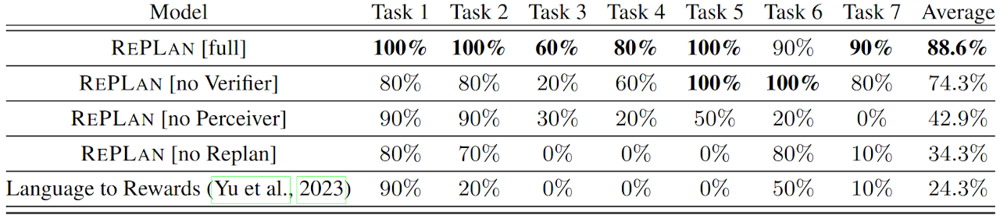

Advancements in large language models (LLMs) have demonstrated their potential in facilitating high-level reasoning, logical reasoning and robotics planning. Recently, LLMs have also been able to generate reward functions for low-level robot actions, effectively bridging the interface between high-level planning and low-level robot control.
We present a novel framework: Replanning with Perception and Language Models that enables real-time replanning capabilities for long-horizon tasks. This framework utilizes the physical grounding provided by a VLM's understanding of the world's state to adapt robot actions when the initial plan fails to achieve the desired goal. We test our approach within two long-horizon task domains, a wooden cabinet puzzle and a larger-scale kitchen environment. We find that RePlan enables a robot to successfully adapt to unforeseen obstacles while accomplishing open-ended, long-horizon goals, where baseline models cannot.


We compare our method to the Language to Rewards framework, a one-shot, in-context learning agent. Language to Rewards uses a Reward Translator to translate a high-level goal (such as "open the drawer") to low-level reward functions that are used by a Motion Controller to instruct a robot on what to do. While Language to Rewards does not utilize a VLM to perceive the scene, we give it access to the same objects as our model identifies at the start of the scene.
To demonstrate the importance of all the modules in our pipeline, we do an ablation study on how well the robot can perform each task without a specific module. We systematically remove the following modules: VLM Perceiver, LLM Verifier, and replanning capabilities of High-Level Planner.
